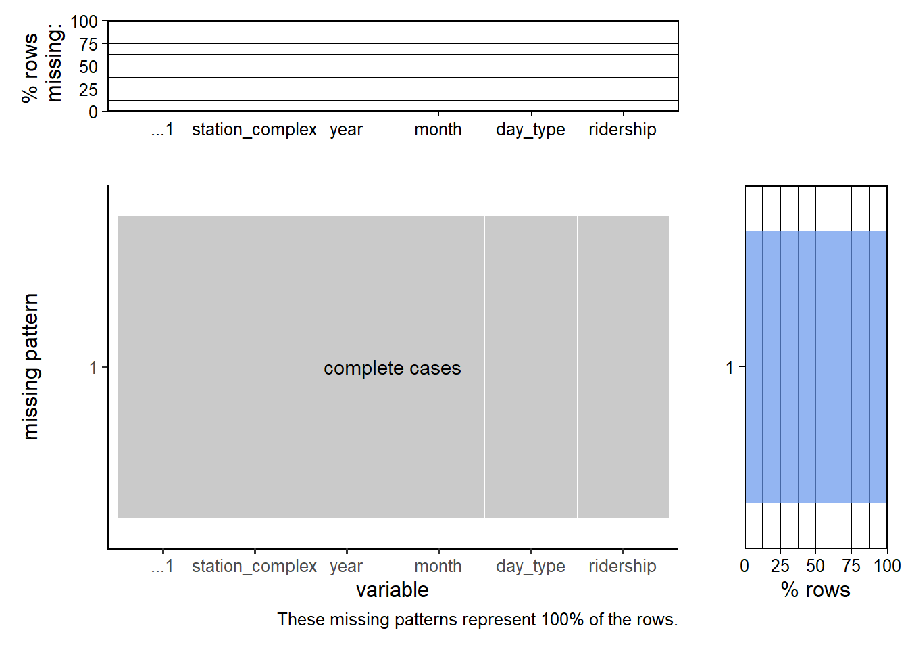

Code
subway_train_delays <- read_csv("data/MTA_Subway_Trains_Delayed__Beginning_2020_20241118.csv")
plot_missing(subway_train_delays, num_char = 8)There are four main datasets that we plan to use for this project. All of the data is collected by the Metropolitan Transportation Authority, and were imported by directly downloading the CSV files from the official website.
This dataset (source) contains the number and percentage of subway trains delayed per weekday, broken down into specific delay categories (from 2020 onward). According to the source, the data on train arrivals is manually entered into a digital dispatching tool, and the number of trains delayed by more than five minutes or missing scheduled stops is summed up. Additionally, every delay is manually assigned a category and subcategory. Thus, the assignment of categories to delays depends on the subjective judgment of the dispatcher, and in some cases, the delays may be caused by more than one cause (which cannot be recorded in this format). The frequency of updates to this dataset varies widely, but it has been updated at least once every month. As of 11/19/2024, the dataset has 39051 rows and 7 columns.
The following columns are included in the data:
This dataset (source) contains details of service alerts causing route changes in the MTA from April 2020 onward. Note that this contains service changes of MTA buses as well, but for now we are interested in the MTA subway alone. Real-time service alerts are first drafted within the MTA alert system, and then disseminated via various channels in real time, while planned alerts are entered into the system ahead of time. The frequency of updates to this dataset varies, but it has been updated at least once every month on average. As of 11/19/2024, the dataset has 351631 rows and 9 columns.
The following columns are included in the data:
This dataset (source) measures how regularly trains are spaced on the MTA subway. Subway schedule data, including service changes, and actual train movement for each day are compiled into a pair of timetables, while the actual train movement and distance data come from a variety of sources. The dataset appears to have been updated at least once every month, and the data has 5306 rows and 8 columns as of 11/19/2024.
The following columns are included in the data:
This dataset (source) subway ridership estimates on an hourly basis by subway station complex and class of fare payment, beginning July 2020. It captures rider entries made at subway turnstiles by using OMNY and MetroCard taps/swipes. MetroCard data is aggregated from on-premises MTA data servers, while OMNY data is provided by a third-party vendor named Cubic. This dataset appears to have multiple updates in October and November 2024. As of 12/9/2024, the dataset has about 105 million rows and 12 columns. Due to its large size (about 17 GB), we used Google Colab to aggregate and preprocess the data and reduce its size (described later).
The following columns are included in the (original) data:
As mentioned earlier, the original dataset was very large and difficult to work with. We discovered that the original dataset had many columns that were not necessary for our analysis. Moreover, a major factor contributing to the size of the dataset was the fact that the ridership data was collected and stored on an hourly basis, rather than monthly. Thus, to reduce the size of the data, we performed the following steps in Google Colab (code can be viewed in the file /preprocessing-code/MTA_Preprocessing.ipynb on GitHub):
transit_mode == 'subway'transit_timestamp and store them in new columns year and monthtransit_timestamp represents a weekend or a weekday, and store the information in a new column day_type, in the same format as in the ‘MTA Subway Trains Delayed’ datasetyear, month, day_type, station_complex, and ridershipridership and take the sum of ridership for every groupThis effectively computes the overall monthly stationwise ridership for weekdays and weekends respectively, and reduces the size of the dataset to about 2000 KB. The new data set has 44095 rows and 5 columns.
subway_train_delays <- read_csv("data/MTA_Subway_Trains_Delayed__Beginning_2020_20241118.csv")
plot_missing(subway_train_delays, num_char = 8)Here, the subcategory field is missing in less than 12.5% of the rows, while all the other values are present in all rows.
mta_service_alerts <- read_csv("data/MTA_Service_Alerts__Beginning_April_2020_20241118.csv")
plot_missing(mta_service_alerts, num_char = 7, max_cols = 4)Here, in about 62.5% of the rows only the Description field is missing, while there are a few rows where the Affected and the Header fields are missing as well.
subway_wait_assessment <- read_csv("data/MTA_Subway_Wait_Assessment__Beginning_2020_20241119.csv")
plot_missing(subway_wait_assessment, num_char = 7)This dataset has no missing values.
Since the original dataset is very large, we did missing value analysis on our modified dataset. (Note: the first column represents a row index which is not relevant for our analysis)
mta_ridership <- read_csv("data/MTA_Subway_Hourly_Ridership_Data_Modified_v2.csv")
plot_missing(mta_ridership)
This dataset has no missing values.